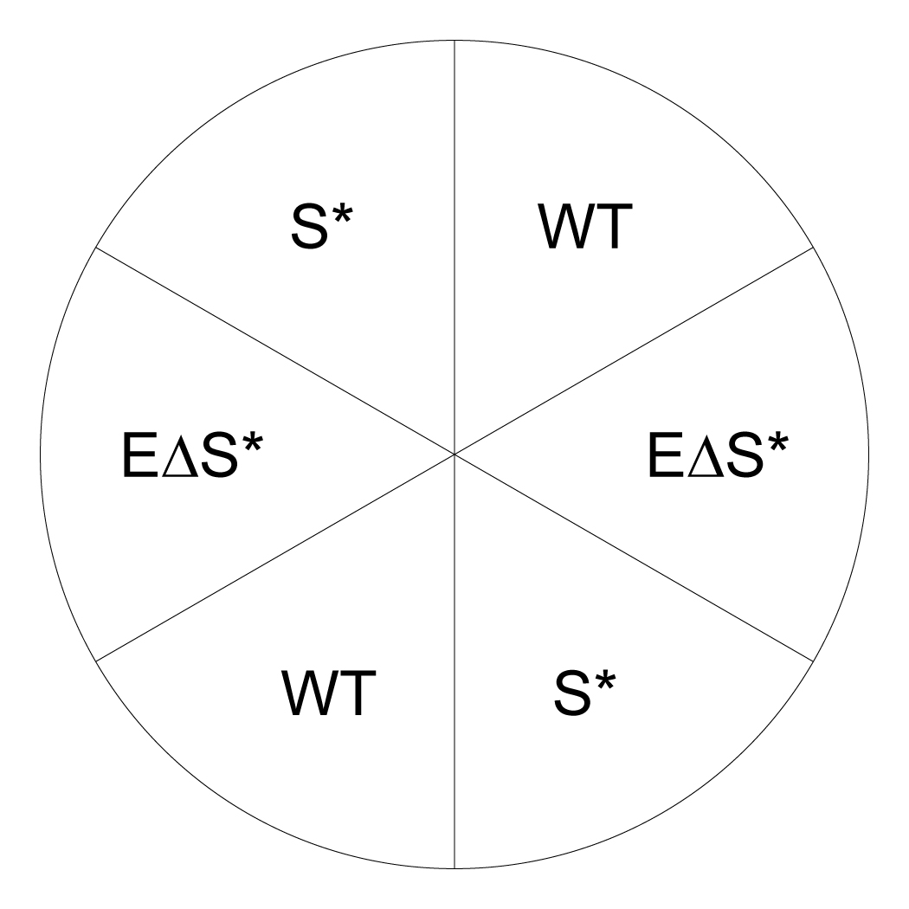

| Query_essential_gene_ID | SPBC83.07 |
| Query_essential_gene_name | jmj3 |
| Query_essential_gene_product | Lid2 complex subunit, histone demethylase H3-K36 specific Jmj3 |
| Suppressor_gene_ID | SPCC306.04c |
| Suppressor_gene_name | set1 |
| Suppressor_gene_product | histone lysine methyltransferase Set1 |
| Mutagen | T-BOE |
| Suppressor_mutation_type | Deletion |
| Strategy | Whether the double mutant is viable |
| Allele_note | NA |
A
B
C
D
E
F
G
H
I
A: Candidate | No selection
B: Candidate | Selection for suppressor gene mutation
C: Candidate | Selection for essential and suppressor genes double mutation
D: Control | No selection
E: Control | Selection for suppressor gene mutation
F: Control | Selection for essential and suppressor genes double mutation
G: Control | Selection for essential and suppressor genes double mutation (with long-time incubation)
H: Quantification | Illustration of the strain arrangement of the semi-quantification plate
I: Quantification | Quantification in restreaking format